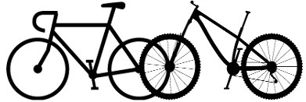

Bicicleta carretera
|

La bicicleta de carretera actualmente suele estar asociada al mundo de la competición debido a que es más incomoda y difícil de manejar que la de montaña aún así suele ser más conocida porque tiene una mayor antiguedad y es la más común en las competiciones de ciclismo como el Tour de Francia o en competiciones de triatlón.
Ventajas
- Menor mantenimiento
- Menor peso
- Más exigente muscularmente (más ejercicio)
Desventajas
- Es más cara al comprarla
- Solamente se puede usar en carretera
- La geometría de la bicicleta, al ser mas aerodinámica, la hace más incomoda

Volver a la página principal

Más información sobre la bicicleta de montaña